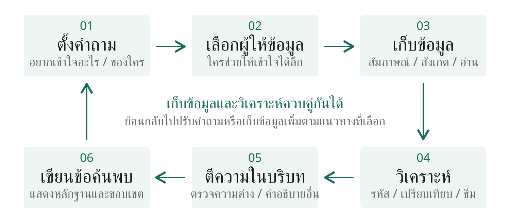
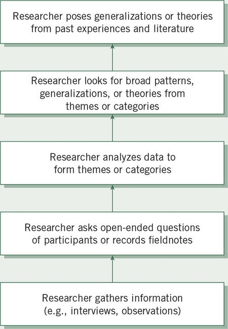
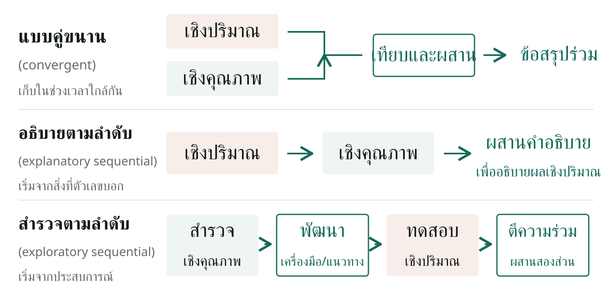

การวิจัยเชิงคุณภาพและการวิจัยแบบผสานวิธีในงานให้คำปรึกษาทางพันธุศาสตร์
วัตถุประสงค์การเรียนรู้และคำถามนำ
| วัตถุประสงค์การเรียนรู้ | คำถามนำ |
|---|---|
| 1. อธิบายเหตุผลที่งานวิจัยด้านการให้คำปรึกษาทางพันธุศาสตร์ต้องใช้การวิจัยเชิงคุณภาพ ควบคู่กับการวิจัยเชิงปริมาณ | ทำไมตัวเลขอย่างเดียวจึงตอบคำถามสำคัญของงานให้คำปรึกษาทางพันธุศาสตร์ไม่ครบ |
| 2. อธิบายลักษณะของการวิจัยเชิงคุณภาพ และเปรียบเทียบแนวทางหลักที่ใช้ในสาขานี้ | การวิจัยเชิงคุณภาพคืออะไร และแต่ละแนวทางให้คำตอบแบบใด |
| 3. วางแผนการวิจัยเชิงคุณภาพให้ทุกขั้นสอดคล้องกัน ตั้งแต่คำถามวิจัยจนถึงการวิเคราะห์ | เขาทำวิจัยเชิงคุณภาพกันอย่างไร ตั้งแต่ตั้งคำถามจนได้ข้อค้นพบ |
| 4. ประเมินคุณภาพและการรายงานงานวิจัยเชิงคุณภาพด้วยเกณฑ์ที่เหมาะกับกระบวนทัศน์ของงาน | ทำไมเราจึงตัดสินงานเชิงคุณภาพด้วยเกณฑ์ของงานเชิงปริมาณไม่ได้ |
| 5. อธิบายเหตุผลและรูปแบบหลักของการวิจัยแบบผสานวิธี | ทำไมและเมื่อใดจึงควรผสานข้อมูลเชิงปริมาณกับเชิงคุณภาพไว้ในการศึกษาเดียว |
| 6. ออกแบบจุดผสานข้อมูล (integration) และประเมินคุณภาพของงานแบบผสานวิธี | จะทำให้ข้อมูลสองชุดกลายเป็นคำตอบเดียวได้อย่างไร |
| 7. ใช้บทความหลัก (landmark papers) เป็นแนวทางการเรียนรู้ด้วยตนเองแบบมีผู้นำทาง | ควรอ่านอะไรก่อนหลัง และอ่านเพื่อหาคำตอบอะไร |
1. งานวิจัยด้านการให้คำปรึกษาทางพันธุศาสตร์ต้องการวิธีเชิงคุณภาพ เพราะคำถามสำคัญหลายข้อเป็นเรื่องความหมายและกระบวนการ ไม่ใช่ขนาดของผล
คำถามหลักของหัวข้อนี้คือ ทำไมตัวเลขอย่างเดียวจึงตอบคำถามสำคัญของงานให้คำปรึกษาทางพันธุศาสตร์ไม่ครบ
ส่วนที่ผ่านมาของรายวิชาเน้นการวิจัยเชิงปริมาณ ซึ่งตอบคำถามว่ามากเท่าใด บ่อยเท่าใด และได้ผลหรือไม่ ส่วนนี้ต่อยอดจากตรงนั้น โดยถามว่าทำไมผลจึงออกมาเช่นนั้น ผู้รับบริการเข้าใจข้อมูลอย่างไร และอะไรเกิดขึ้นในห้องให้คำปรึกษา การให้คำปรึกษาทางพันธุศาสตร์เป็นกระบวนการทางจิตวิทยาและการให้ความรู้ที่เปลี่ยนแปลงไปตามปฏิสัมพันธ์ (psychoeducational process) แต่ความรู้เกี่ยวกับสิ่งที่เกิดขึ้นภายในกระบวนการนี้ยังมีน้อย จึงมีผู้เปรียบกระบวนการนี้ว่าเป็นกล่องดำ (black box) ที่ต้องศึกษาด้วยการวิจัยกระบวนการ (process research) ว่าผู้ให้คำปรึกษาและผู้รับบริการสื่อสารกันอย่างไร ใช้วิธีการช่วยเหลือแบบใด และผู้รับบริการมีความต้องการและความคาดหวังอะไร (Biesecker & Peters, 2001)
งานคลาสสิกที่แสดงพลังของวิธีเชิงคุณภาพได้ชัดคือการวิเคราะห์บทสัมภาษณ์กึ่งโครงสร้างของผู้รับบริการ 53 รายหลังรับคำปรึกษา ผู้ที่กำลังพิจารณาจะมีบุตรอีกจำได้ถูกต้องว่าโอกาสเกิดซ้ำเป็นเท่าใด แต่กลับมองตัวเลขนั้นว่าเป็นเรื่องไกลตัว และรับรู้ความเสี่ยงแบบสองทาง คือ "จะเกิด" หรือ "ไม่เกิด" (binary perception of risk) ผู้ปกครองจึงหันไปให้น้ำหนักกับผลที่จะตามมาหากเหตุการณ์นั้นเกิดขึ้นจริง และลองนึกถึงสถานการณ์ที่เลวร้ายที่สุด ผู้วิจัยสรุปว่าวิธีที่ผู้ปกครองรับรู้ข้อเท็จจริงอาจกำหนดทิศทางการตัดสินใจมากกว่าตัวข้อเท็จจริงเอง (Lippman-Hand & Fraser, 1979) หากวัดผลด้วยแบบทดสอบความจำเรื่องตัวเลขความเสี่ยงเพียงอย่างเดียว ผลอาจบอกได้เพียงว่าผู้รับบริการจำตัวเลขด้านนั้นได้ แต่จะมองไม่เห็นความหมายที่ผู้ปกครองใช้ตัดสินใจจริง
บทความวิธีวิทยารุ่นแรกในวารสาร Journal of Genetic Counseling เสนอว่าวิธีเชิงคุณภาพเหมาะกับสาขานี้ เพราะจับความซับซ้อน กระบวนการ และความหมายของการกระทำของมนุษย์ได้ (Beeson, 1997) สองทศวรรษต่อมา งานเชิงคุณภาพในสาขานี้มีจำนวนมากขึ้น แต่ผู้วิจัยจำนวนไม่น้อยเรียนรู้จากการลงมือทำ (learning through doing) ซึ่งอาจขาดฐานทางทฤษฎีจนนำผลไปใช้ในเวชปฏิบัติได้น้อย ขณะเดียวกัน วิทยาศาสตร์สุขภาพยังให้น้ำหนักกับงานเชิงปริมาณ ผู้วิจัยจึงมักต้องอธิบายเหตุผลของการเลือกวิธีเชิงคุณภาพให้ชัด (Wainstein et al., 2023)
ตารางที่ 1 เปรียบเทียบวิธีวิจัยสามแบบ ใช้เป็นแผนที่สำหรับส่วนที่เหลือของเอกสาร
ตารางที่ 1 การวิจัยสามแบบตอบคำถามต่างชนิดกัน
| ประเด็น | เชิงปริมาณ (quantitative) | เชิงคุณภาพ (qualitative) | แบบผสานวิธี (mixed methods) |
|---|---|---|---|
| คำถามที่เหมาะ | เท่าใด บ่อยเพียงใด สัมพันธ์กันหรือไม่ ได้ผลหรือไม่ | อย่างไร ทำไม มีความหมายอย่างไรต่อผู้ประสบ | คำถามเดียวที่ต้องการทั้งความกว้างของตัวเลขและความลึกของความหมาย |
| ตรรกะหลัก | มักทดสอบสมมติฐานจากทฤษฎี (deductive) และทำงานเชิงพรรณนาหรือสำรวจได้ | สร้างความเข้าใจจากข้อมูล (inductive) ย้อนตรวจแนวคิดกับข้อมูล (deductive) หรือใช้เหตุผลเชิงอธิบาย (abductive) ตามแนวทาง | ใช้ทั้งสองแบบ และสลับไปมาตามแผน |
| กลุ่มตัวอย่าง | เลือกตัวอย่างและให้เหตุผลเรื่องขนาดตามแบบวิจัย หลายงานใช้การสุ่มหรือคำนวณเพื่อความแม่นยำ/อำนาจทางสถิติ | เลือกแบบเจาะจงผู้ที่ให้ข้อมูลได้ลึก (purposive sampling) | มีกลุ่มตัวอย่างของแต่ละส่วน และกำหนดว่าสองกลุ่มเชื่อมกันอย่างไร |
| ข้อมูล | แบบสอบถาม มาตรวัด ข้อมูลทะเบียน | คำพูด ข้อความ การสังเกต บันทึกการให้คำปรึกษา | ทั้งสองชนิด |
| ผลผลิต | ค่าประมาณ ความสัมพันธ์ ขนาดผล | ธีม หมวดหมู่ คำอธิบาย หรือทฤษฎี | ข้อสรุปที่ผสานแล้ว (meta-inference) |
| เกณฑ์คุณภาพ | ความตรง ความเที่ยง การควบคุมอคติ | ความสอดคล้องเชิงวิธีวิทยา ความโปร่งใส การสะท้อนคิดของผู้วิจัย | คุณภาพของแต่ละส่วน และคุณภาพของการผสาน |
2. การวิจัยเชิงคุณภาพศึกษาความหมายจากมุมมองของผู้ประสบ และแต่ละแนวทางให้ผลผลิตต่างกัน (qualitative approaches)
คำถามหลักของหัวข้อนี้คือ การวิจัยเชิงคุณภาพคืออะไร และแต่ละแนวทางให้คำตอบแบบใด
2.1 แนวทางเชิงคุณภาพแต่ละแบบตั้งอยู่บนกระบวนทัศน์ที่ต่างกัน ผู้วิจัยจึงต้องรู้ว่าตนยืนอยู่ตรงไหน (paradigm)
การวิจัยเชิงคุณภาพไม่ใช่วิธีเดียว แต่เป็นครอบครัวของแนวทางที่มีสมมติฐานเรื่องความจริงและความรู้ต่างกัน งานจำนวนมากตั้งอยู่บนกระบวนทัศน์แบบตีความหรือแบบสร้างสรรค์ความรู้ (interpretivist/constructivist) ซึ่งมองว่าความจริงมีได้หลายแบบตามมุมมองของผู้คน และผู้วิจัยมีส่วนในการตีความ ส่วนงานบางแบบตั้งอยู่บนกระบวนทัศน์หลังปฏิฐานนิยม (post-positivist) ซึ่งถือว่ามีความจริงภายนอก แต่ความรู้ที่ได้ยังคลาดเคลื่อนและต้องตรวจสอบ ทฤษฎีฐานรากมีหลายสาย โดยบทความนี้อภิปรายสายหลังปฏิฐานนิยมและสายสร้างสรรค์ความรู้เป็นสำคัญ (Fishler Malone & Carmichael, 2025) ปัญหาคุณภาพของงานเชิงคุณภาพในสาขานี้ส่วนหนึ่งเกิดจากการนำอุดมคติด้านคุณภาพของงานเชิงปริมาณมาใช้กับงานที่ไม่ได้ตั้งอยู่บนปฏิฐานนิยม และจากการใช้เกณฑ์ชุดเดียวกับทุกกระบวนทัศน์ (Wainstein, 2026)
2.2 แนวทางหลักต่างกันที่คำถามที่ตอบได้และผลผลิตที่ได้
ตารางที่ 2 สรุปแนวทางที่พบบ่อยในงานวิจัยด้านการให้คำปรึกษาทางพันธุศาสตร์ พร้อมตัวอย่างงานในสาขาและแหล่งเรียนรู้วิธีวิทยาของแต่ละแนวทาง
ตารางที่ 2 แนวทางเชิงคุณภาพหลักและผลผลิตของแต่ละแนวทาง
| แนวทาง | คำถามที่เหมาะ | ผลผลิต | ตัวอย่างหรือแหล่งเรียนรู้ |
|---|---|---|---|
| การพรรณนาเชิงคุณภาพ (qualitative description) | ต้องการคำบรรยายตรงไปตรงมาของเหตุการณ์ในภาษาของผู้ประสบ | สรุปที่ครอบคลุมและอยู่ใกล้ข้อมูล | Sandelowski, 2000 |
| การวิเคราะห์แก่นสาระ (thematic analysis) | รูปแบบของความหมายที่ปรากฏซ้ำทั่วชุดข้อมูล | ธีม (themes) | Braun & Clarke, 2006; ตัวอย่างเรื่องผลของการตรวจยีน BRCA ต่อความสัมพันธ์ในครอบครัว Douglas et al., 2009 |
| การวิเคราะห์เนื้อหา (qualitative content analysis) | จัดหมวดหมู่เนื้อหาตามข้อมูล ตามทฤษฎีที่มีอยู่ หรือนับคำสำคัญแล้วตีความ | หมวดหมู่ (categories) | สามแบบคือ conventional, directed และ summative Hsieh & Shannon, 2005 |
| วิธีกรอบแนวคิด (framework method) | ทีมสหวิชาชีพต้องการเปรียบเทียบข้อมูลข้ามผู้ให้ข้อมูลและข้ามประเด็นอย่างเป็นระบบ | ตารางเมทริกซ์ (matrix) และการตีความ | Gale et al., 2013 |
| ทฤษฎีฐานราก (grounded theory) | กระบวนการทางสังคมเกิดขึ้นอย่างไร เมื่อยังไม่มีทฤษฎีอธิบาย | ทฤษฎีเฉพาะเรื่องที่มีรากจากข้อมูล (substantive theory) | Fishler Malone & Carmichael, 2025; ตัวอย่าง McAllister et al., 2008 |
| ปรากฏการณ์วิทยาเชิงตีความ (interpretative phenomenological analysis: IPA) | ประสบการณ์ที่บุคคลมีชีวิตอยู่กับมัน และความหมายที่เขาให้ | คำอธิบายเชิงลึกรายบุคคลและข้ามบุคคล | Starr & Smith, 2025 |
| การวิจัยเชิงคุณภาพแบบฉันทามติ (consensual qualitative research: CQR) | ประสบการณ์ภายในของผู้รับและผู้ให้การปรึกษา | โดเมนและแนวคิดหลักที่ทีมเห็นพ้อง | Hill et al., 1997; Hill et al., 2005 |
| ชาติพันธุ์วรรณนา (ethnography) | วัฒนธรรมและการปฏิบัติจริงในสถานบริการ | คำบรรยายบริบทเชิงลึก | การศึกษาภาคสนามในคลินิกพันธุศาสตร์มะเร็ง Peters et al., 2001 |
| การวิเคราะห์บทสนทนา (conversation analysis) | ผู้ให้คำปรึกษาและผู้รับบริการสร้างความเข้าใจร่วมกันผ่านบทสนทนาอย่างไร | รูปแบบปฏิสัมพันธ์ในบทสนทนา | การวิเคราะห์วิดีโอการให้คำปรึกษา 10 ครั้งในฟินแลนด์ Lehtinen, 2005 |
สองแนวทางท้ายตารางเหมาะกับการเปิดกล่องดำของการให้คำปรึกษาโดยตรง เพราะศึกษาสิ่งที่เกิดขึ้นจริงแทนการถามความเห็นภายหลัง ตัวอย่างเช่น การวิเคราะห์บทสนทนาจากวิดีโอการให้คำปรึกษาพบว่า เมื่อผู้รับบริการแสดงความเข้าใจออกมา แพทย์จะทำสองอย่างพร้อมกัน คือทำให้แน่ใจว่าผู้รับบริการเข้าใจถูกต้อง และแสดงว่าตนรับรู้ว่าข้อมูลนั้นเป็นข่าวดีหรือข่าวร้ายสำหรับผู้รับบริการ (Lehtinen, 2005) ส่วนการวิเคราะห์เนื้อหาเป็นตัวอย่างที่ดีว่าชื่อวิธีเดียวกันอาจหมายถึงการปฏิบัติต่างกัน บทความวิธีวิทยาในสาขานี้จึงมีการโต้แย้งกันว่าควรอธิบายการวิเคราะห์เนื้อหาอย่างไร (Lynch et al., 2024; Wainstein et al., 2024) ผู้วิจัยจึงควรระบุให้ชัดว่าใช้แบบใด และอ้างแหล่งวิธีวิทยาที่ตรงกับแบบนั้น
2.3 จุดมุ่งหมายบอกว่างานจะสร้างความเข้าใจอะไร และปรับจุดเน้นตามแบบวิจัย (purpose statement)
ปัญหาวิจัย (research problem) อธิบายสิ่งที่ยังไม่เข้าใจและเหตุใดจึงควรศึกษา จุดมุ่งหมายของการวิจัย (purpose statement) ระบุเจตนาหลักของการศึกษานี้ ส่วนคำถามวิจัย (research question) แปลงเจตนานั้นเป็นคำถามปลายเปิดที่ข้อมูลจะช่วยตอบ เช่น คลินิกมีคะแนนความรู้ แต่ยังไม่เข้าใจความหมายของความพร้อมตัดสินใจของผู้รับบริการ จุดมุ่งหมายจึงมุ่งเข้าใจประสบการณ์นั้น และคำถามถามว่าผู้รับบริการให้ความหมายกับการพร้อมหรือยังไม่พร้อมอย่างไร
ร่างจุดมุ่งหมายให้เห็นองค์ประกอบหกส่วน ได้แก่ แบบวิจัย คำกริยาที่เปิดรับการเรียนรู้ ปรากฏการณ์หลัก ผู้เข้าร่วม สถานที่หรือบริบท และความหมายเบื้องต้นของปรากฏการณ์ ใช้ภาษาที่เปิดให้พบความหมายหรือคำอธิบายที่ยังไม่ได้คาดไว้ ความหมายเบื้องต้นช่วยบอกขอบเขตของสิ่งที่จะศึกษา และทบทวนได้เมื่อเรียนรู้จากข้อมูล
การศึกษานี้ใช้ [แบบวิจัย] เพื่อ [สำรวจ / ทำความเข้าใจ / อธิบาย / พัฒนาคำอธิบาย] [ปรากฏการณ์หลัก] ของ [ผู้เข้าร่วม] ใน [สถานที่หรือบริบท] โดยเบื้องต้น [ปรากฏการณ์] หมายถึง [ความหมายทำงานที่เปิดให้ทบทวน]
เลือกจุดเน้นและคำกริยาจากสิ่งที่งานต้องการสร้างความเข้าใจ ตารางต่อไปนี้ช่วยปรับร่างตามแบบวิจัย โดยการเลือกคำกริยายังขึ้นกับคำถามและแนวทางเฉพาะของงาน
| แบบวิจัย | จุดเน้นที่ควรปรากฏในจุดมุ่งหมาย |
|---|---|
| การวิจัยเชิงเรื่องเล่า (narrative) | เรื่องราวของบุคคล เหตุการณ์สำคัญ และการเชื่อมประสบการณ์ผ่านช่วงเวลา |
| ปรากฏการณ์วิทยา (phenomenology) | ประสบการณ์ที่มีชีวิตอยู่กับปรากฏการณ์ และความหมายของประสบการณ์สำหรับผู้ประสบ |
| ทฤษฎีฐานราก (grounded theory) | การพัฒนาคำอธิบายเชิงทฤษฎีของกระบวนการหรือการกระทำ โดยมีรากจากข้อมูล |
| ชาติพันธุ์วรรณนา (ethnography) | รูปแบบการปฏิบัติ ความหมาย และวัฒนธรรมของกลุ่มในบริบทการใช้ชีวิตหรือทำงานร่วมกัน |
| กรณีศึกษา (case study) | การทำความเข้าใจกรณีอย่างลึกซึ้งในบริบทจริง โดยระบุขอบเขตของกรณีและใช้ข้อมูลที่เหมาะสมจากหลายแหล่ง |
ตัวอย่างสมมติ: การศึกษาเชิงปรากฏการณ์วิทยานี้มุ่งทำความเข้าใจประสบการณ์และความหมายของความพร้อมตัดสินใจเรื่องการตรวจของผู้รับบริการที่ทราบว่าตนและคู่สมรสเป็นพาหะธาลัสซีเมีย ณ คลินิก ก. ในเบื้องต้น ความพร้อมหมายถึงการรับรู้ว่าสามารถพิจารณาทางเลือกและตัดสินใจตามสิ่งที่ตนให้คุณค่าได้ นิยามนี้เปิดให้ทบทวนจากข้อมูล และความพร้อมไม่เท่ากับการเลือกตรวจ หน่วยที่ศึกษาคือบุคคล จึงไม่สรุปว่าคู่สมรสมีมุมมองเดียวกัน
ตรวจความสอดคล้องภายใน (internal alignment) โดยอ่านต่อกันว่า ปัญหา → จุดมุ่งหมาย → คำถามวิจัย → แบบวิจัยและผู้ให้ข้อมูล → การเก็บและวิเคราะห์ข้อมูล → ข้อสรุปที่รองรับได้ จากนั้นย้อนกลับจากข้อสรุปไปถามว่า ข้อมูลตามแผนสามารถตอบคำถามและเจตนาเดิมได้จริงหรือไม่ ถ้าเปลี่ยนปรากฏการณ์ กลุ่มผู้เข้าร่วม หรือผลผลิตที่ต้องการ ควรทบทวนส่วนที่เกี่ยวข้องตามไปด้วย
อ่านประกอบ: Creswell & Creswell (2018), บท 6, PDF หน้า 178–182 โดยเฉพาะแบบร่างจุดมุ่งหมายหน้า 180; บท 1 และบท 9 สำหรับความสัมพันธ์ระหว่างจุดยืน แบบวิจัย และวิธีดำเนินการ
3. การทำวิจัยเชิงคุณภาพคือการเลือกทุกขั้นให้สอดคล้องกัน ตั้งแต่คำถามจนถึงการรายงาน (methodological congruence)
คำถามหลักของหัวข้อนี้คือ เขาทำวิจัยเชิงคุณภาพกันอย่างไร ตั้งแต่ตั้งคำถามจนได้ข้อค้นพบ
ภาพที่ 1 แสดงหกขั้นของการทำวิจัยเชิงคุณภาพ และย้ำว่าการเลือกในแต่ละขั้นต้องสอดคล้องกับขั้นก่อนหน้า เกณฑ์ที่ใช้ประเมินรายงานวิจัยเชิงคุณภาพในวารสาร Journal of Genetic Counseling ล่าสุดใช้หลักนี้เป็นแกน ร่วมกับการรู้ว่าตนเลือกอะไรและเพราะเหตุใด (knowingness) และความโปร่งใส (transparency) (Wainstein, 2026) ตัวอย่างใต้ภาพมาจากงานทฤษฎีฐานรากเรื่องประสบการณ์ของผู้ปกครองที่ได้รับผลการถอดรหัสพันธุกรรมว่าไม่พบสาเหตุหลัก (Gurasashvili et al., 2024)

ภาพที่ 1 ความสอดคล้องของการออกแบบวิจัยและการทบทวนกลับไปมา เป็นภาพรวมของกระบวนการวิจัย ไม่ใช่หกขั้นของ การวิเคราะห์แก่นสาระแบบสะท้อนคิด (reflexive thematic analysis); ตัวอย่าง: Gurasashvili et al. (2024)
3.1 คำถามวิจัยเชิงคุณภาพเป็นคำถามปลายเปิดเรื่องประสบการณ์ ความหมาย หรือกระบวนการ (research question)
คำถามเชิงคุณภาพมักขึ้นต้นด้วย "อย่างไร" "ทำไม" หรือ "มีประสบการณ์อย่างไร" และระบุผู้ประสบ ปรากฏการณ์ และบริบทให้ชัด ตัวอย่างการแปลงคำถามคือ คำถามเชิงปริมาณว่า "ผู้มีผลตรวจยีนผิดปกติร้อยละเท่าใดแจ้งผลแก่ญาติ" เมื่อแปลงเป็นคำถามเชิงคุณภาพจะเป็น "ผู้มีผลตรวจยีนผิดปกติตัดสินใจอย่างไรว่าจะบอกญาติคนใด และบอกอย่างไร" งานสัมภาษณ์กึ่งโครงสร้างที่ถามคำถามแบบหลังพบว่า ผู้ป่วยมองการบอกความเสี่ยงทางพันธุกรรมว่าเป็นความรับผิดชอบของครอบครัว โครงสร้าง พลวัต และกติกาของครอบครัวมีผลต่อการตัดสินใจ และความมั่นใจในตัวเลขความเสี่ยงของตนเองก็มีผลต่อสิ่งที่บอกญาติได้ (Forrest et al., 2003) ข้อค้นพบเหล่านี้บอกผู้ให้คำปรึกษาว่าควรช่วยตรงจุดใด ซึ่งตัวเลขร้อยละอย่างเดียวบอกไม่ได้
3.2 การเลือกผู้ให้ข้อมูลเป็นแบบเจาะจง และขนาดตัวอย่างให้เหตุผลตามแนวทางและความต้องการข้อมูล โดยอาจใช้พลังของข้อมูลช่วยพิจารณา ไม่ใช่ตัวเลขตายตัว (sampling and sample size)
งานเชิงคุณภาพเลือกผู้ให้ข้อมูลแบบเจาะจง (purposive sampling) คือเลือกผู้ที่มีประสบการณ์ตรงและให้ข้อมูลได้ลึก อาจเลือกให้หลากหลายที่สุด เลือกตามเกณฑ์ หรือให้ผู้ให้ข้อมูลแนะนำต่อ ในทฤษฎีฐานรากจะเลือกผู้ให้ข้อมูลรายต่อไปตามแนวคิดที่กำลังก่อตัวจากการวิเคราะห์ (theoretical sampling) (Fishler Malone & Carmichael, 2025)
คำถามที่นักศึกษาถามบ่อยที่สุดคือ "ต้องสัมภาษณ์กี่คน" คำตอบเดิมที่ใช้กันแพร่หลายคือ "จนกว่าข้อมูลจะอิ่มตัว (saturation)" การทดลองกับบทสัมภาษณ์เชิงลึก 60 รายพบว่า ในชุดข้อมูลนั้นข้อมูลอิ่มตัวภายใน 12 รายแรก และองค์ประกอบพื้นฐานของธีมใหญ่ปรากฏตั้งแต่ราวรายที่หก (Guest et al., 2006) ตัวเลขนี้มาจากชุดข้อมูลเดียว จึงไม่ใช่กติกาสำหรับทุกงาน แนวคิดเรื่องความอิ่มตัวเองยังถูกใช้อย่างไม่คงเส้นคงวา มีอย่างน้อยสี่ความหมาย และมีตรรกะที่ไม่แน่นอน เพราะเป็นการทำนายสิ่งที่ยังไม่ได้เห็นจากสิ่งที่เห็นแล้ว (Saunders et al., 2018) สำหรับการวิเคราะห์แก่นสาระแบบสะท้อนคิด (reflexive thematic analysis) ผู้พัฒนาวิธีตั้งคำถามว่าความอิ่มตัวเป็นแนวคิดที่ใช้ได้หรือไม่ (Braun & Clarke, 2021b)
ทางเลือกที่ใช้มากขึ้นคือพลังของข้อมูล (information power) ซึ่งเสนอว่ายิ่งกลุ่มตัวอย่างมีข้อมูลที่ตรงกับการศึกษามาก ก็ยิ่งต้องการผู้ให้ข้อมูลน้อยลง พลังของข้อมูลขึ้นกับห้าปัจจัย คือ จุดมุ่งหมายของการศึกษาแคบหรือกว้าง ความเฉพาะเจาะจงของกลุ่มตัวอย่าง การใช้ทฤษฎีที่มีอยู่ คุณภาพของบทสนทนา และกลยุทธ์การวิเคราะห์ (Malterud et al., 2016) ผู้วิจัยใช้ห้าปัจจัยนี้ประมาณขนาดตัวอย่างตอนวางแผน แล้วทบทวนอีกครั้งระหว่างเก็บข้อมูล ตัวอย่างเช่น งานทฤษฎีฐานรากเรื่องผลการถอดรหัสพันธุกรรมที่ไม่พบสาเหตุหลัก สัมภาษณ์ผู้ปกครองเก้าคน ซึ่งเป็นกลุ่มที่มีประสบการณ์เฉพาะมาก (Gurasashvili et al., 2024)
3.3 การเก็บข้อมูลเลือกตามสิ่งที่ต้องการเห็น ทั้งคำบอกเล่า การสนทนากลุ่ม และสิ่งที่เกิดขึ้นจริงในการให้คำปรึกษา (data collection)
วิธีเก็บข้อมูลที่พบบ่อยในสาขานี้มีดังนี้
- การสัมภาษณ์เชิงลึกหรือกึ่งโครงสร้าง (in-depth or semi-structured interview) เหมาะกับประสบการณ์ส่วนบุคคลและเรื่องอ่อนไหว อาจสัมภาษณ์ทางโทรศัพท์หรือออนไลน์เมื่อผู้ให้ข้อมูลกระจายอยู่หลายพื้นที่ (Gurasashvili et al., 2024)
- การสนทนากลุ่ม (focus group) เหมาะกับการเห็นความคิดที่ผู้คนสร้างร่วมกันและการเปรียบเทียบมุมมองของผู้มีส่วนได้ส่วนเสียหลายกลุ่ม งานพัฒนาแนวคิดเรื่องการเสริมพลัง (empowerment) ของผู้รับบริการพันธุศาสตร์ใช้การสนทนากลุ่มเจ็ดกลุ่มร่วมกับการสัมภาษณ์ 19 ราย ครอบคลุมผู้ป่วย ผู้แทนกลุ่มผู้ป่วย และบุคลากรสุขภาพ (McAllister et al., 2008)
- การสังเกตและการบันทึกการให้คำปรึกษาจริง (observation and recorded sessions) เหมาะกับคำถามเรื่องกระบวนการ งานเรื่องการนำเสนอข้อมูลความเสี่ยงมะเร็งเต้านมและรังไข่ใช้การสังเกตร่วมกับแบบสอบถามและการสัมภาษณ์ และพบว่าการนำเสนอความเสี่ยงแตกต่างกันมากทั้งภายในและระหว่างการให้คำปรึกษา (Hallowell et al., 1997)
แนวคำถามสัมภาษณ์ (interview guide) ควรเรียงจากคำถามเปิดกว้างไปสู่ประเด็นเฉพาะ และมีคำถามกระตุ้นให้เล่าเพิ่ม ตำราวิธีวิจัยด้านการให้คำปรึกษาทางพันธุศาสตร์มีแบบฝึกสำหรับพัฒนาแนวคำถาม พร้อมขั้นตอนการคัดเลือกผู้ให้ข้อมูล การวิเคราะห์ และการเขียนรายงาน (MacFarlane et al., 2014)
3.4 การวิเคราะห์เปลี่ยนข้อความจำนวนมากให้เป็นธีม หมวดหมู่ หรือทฤษฎี ผ่านการให้รหัสและการเปรียบเทียบซ้ำ (analysis)
สำหรับตัวอย่างงานสัมภาษณ์ การเตรียมวิเคราะห์อาจเริ่มจากถอดเทปคำต่อคำ ตรวจความถูกต้อง และอ่านซ้ำจนคุ้นเคย ข้อมูลภาพ เอกสาร หรือบันทึกภาคสนามอาจเตรียมต่างออกไป จากนั้นให้รหัส (coding) แก่ส่วนของข้อความที่มีความหมาย แล้วรวมรหัสเป็นหมวดหมู่หรือธีม และตีความว่าธีมเหล่านั้นตอบคำถามวิจัยอย่างไร รายละเอียดแต่ละขั้นต่างกันตามแนวทาง วิธีกรอบแนวคิดมีเจ็ดขั้น ได้แก่ การถอดเทป การทำความคุ้นเคยกับบทสัมภาษณ์ การให้รหัส การพัฒนากรอบการวิเคราะห์ การนำกรอบไปใช้กับข้อมูลทั้งหมด การใส่ข้อมูลลงตารางเมทริกซ์ และการตีความ (Gale et al., 2013) ทฤษฎีฐานรากใช้การให้รหัสหลายระดับ เก็บและวิเคราะห์ข้อมูลไปพร้อมกัน เปรียบเทียบข้อมูลกับข้อมูลอย่างต่อเนื่อง (constant comparison) และเขียนบันทึกความคิดของผู้วิจัย (memo-writing) จนได้ทฤษฎีที่อธิบายปรากฏการณ์ (Fishler Malone & Carmichael, 2025) ผลลัพธ์ของงานเรื่องผลการถอดรหัสพันธุกรรมที่ไม่พบสาเหตุหลักแสดงลักษณะนี้ชัด ผู้วิจัยได้สองธีม คือความพยายามไขปริศนาที่ยังไม่มีคำตอบ และความหวังที่หายไปแล้วกลับมาในรูปที่เล็กลง จากนั้นรวมเป็นทฤษฎีที่ผู้วิจัยเรียกว่าความไม่สมดุลของความหวัง (the disequilibrium of hope) (Gurasashvili et al., 2024)
ตรรกะอุปนัย: จากข้อมูลสู่คำอธิบาย (inductive logic)
ภาพที่ 3.5 แสดงตรรกะของงานที่พัฒนาคำอธิบายจากข้อมูล โดยอ่านจากล่างขึ้นบน เชื่อมการเก็บข้อมูล การวิเคราะห์ และการเสนอข้อสรุปเข้าด้วยกัน

- เก็บข้อมูล เช่น การสัมภาษณ์และการสังเกต
- ใช้คำถามปลายเปิดกับผู้ร่วมวิจัย หรือบันทึกภาคสนาม
- วิเคราะห์ข้อมูลเพื่อสร้างแก่นสาระหรือหมวดหมู่
- มองหาแบบแผน ข้อสรุปเชิงแนวคิด หรือทฤษฎีจากแก่นสาระหรือหมวดหมู่
- เสนอข้อสรุปหรือทฤษฎีโดยเชื่อมกับประสบการณ์เดิมและวรรณกรรม
ตรรกะนี้เชื่อมกับจุดมุ่งหมายของการศึกษา: ถ้าต้องการเข้าใจความพร้อมตัดสินใจ ต้องมีข้อมูลประสบการณ์ตรงที่ช่วยตีความความพร้อมนั้น จากนั้นติดตามได้ว่ารหัส แก่นสาระ และคำอธิบายสัมพันธ์กับข้อมูลอย่างไร เมื่อเทียบกับกรณีที่ต่างออกไปหรือวรรณกรรม คำอธิบายอาจต้องปรับ
การเก็บข้อมูลกับการถามปลายเปิดหรือบันทึกภาคสนามเกี่ยวข้องกัน ไม่จำเป็นต้องเป็นขั้นแยกที่ทำเสร็จตามลำดับตายตัว งานเชิงคุณภาพอาจใช้ทฤษฎีเป็นกรอบตั้งต้น เป็นเลนส์ หรือเป็นปลายทางได้ด้วย ข้อสรุปทั่วไปในภาพจึงต้องอ่านตามขอบเขตของการตีความ ไม่เท่ากับการอนุมานสัดส่วนของประชากร และไม่ใช่ทุกงานต้องสร้างทฤษฎีใหม่
อ่านประกอบ: Creswell & Creswell (2018), บท 3, PDF หน้า 109–111 ภาพนี้แสดงตรรกะการพัฒนาคำอธิบาย ส่วนหกระยะของการวิเคราะห์แก่นสาระแบบสะท้อนคิดเป็นแนวทางดำเนินการวิเคราะห์เฉพาะวิธี
3.5 ผู้วิจัยเป็นเครื่องมือวิจัย จึงต้องสะท้อนคิดและเปิดเผยจุดยืนของตน (reflexivity and positionality)
ในงานเชิงคุณภาพ ผู้วิจัยเป็นผู้ถาม ฟัง และตีความ ตัวตนของผู้วิจัยจึงมีผลต่อข้อมูลและข้อค้นพบ ประเด็นนี้สำคัญเป็นพิเศษในสาขานี้ เพราะผู้วิจัยจำนวนมากเป็นผู้ให้คำปรึกษาทางพันธุศาสตร์ที่ศึกษาผู้รับบริการหรือวิชาชีพของตนเอง จุดยืนของผู้วิจัย (positionality) หมายถึงอัตลักษณ์ทางสังคม วัฒนธรรม และวิชาชีพที่เชื่อมกับงานวิจัย ส่วนการสะท้อนคิด (reflexivity) คือการตรวจสอบตนเองอย่างต่อเนื่องว่าจุดยืนนั้นมีผลต่อการออกแบบ การตีความ และการนำผลไปใช้อย่างไร แนวทางล่าสุดของสาขาให้คำถามสะท้อนคิดสำหรับเขียนคำแถลงจุดยืน (positionality statement) และเตือนว่าการเปิดเผยต้องไม่ทำให้ผู้ให้ข้อมูลกลุ่มเปราะบางเสี่ยงต่ออันตราย (Zayhowski et al., 2025)
3.6 จริยธรรมของงานเชิงคุณภาพในสาขานี้ต้องคำนึงถึงความอ่อนไหวของเรื่องครอบครัวและการเจริญพันธุ์ (research ethics)
การประเมิน การวิเคราะห์ และประเด็นจริยธรรมของงานเชิงคุณภาพต่างจากงานเชิงปริมาณในหลายจุด (Beeson, 1997) ในบริบทของการให้คำปรึกษาทางพันธุศาสตร์ ข้อควรระวังเชิงปฏิบัติมีดังนี้
- การสัมภาษณ์เรื่องการวินิจฉัย การตั้งครรภ์ หรือการสูญเสีย อาจกระตุ้นความทุกข์ ผู้วิจัยควรมีแผนส่งต่อและช่องทางช่วยเหลือที่ชัดเจน
- ข้อมูลพันธุกรรมเป็นข้อมูลของทั้งครอบครัว คำพูดที่ยกมาอ้างอาจทำให้ญาติที่ไม่ได้ยินยอมถูกระบุตัวได้ จึงต้องปกปิดรายละเอียดให้รัดกุม
- เมื่อผู้วิจัยเป็นผู้ให้คำปรึกษาของผู้ให้ข้อมูลด้วย ต้องแยกบทบาทผู้วิจัยออกจากบทบาทผู้ให้บริการให้ชัด เพื่อให้ผู้ให้ข้อมูลปฏิเสธการเข้าร่วมได้โดยไม่กระทบการรับบริการ
การข้ามคำถาม พัก หรือหยุดสัมภาษณ์ต้องทำได้โดยไม่กระทบการรับบริการ ควรอธิบายขอบเขตความยินยอมเรื่องการบันทึกและการยกคำพูด รวมถึงแยกการวิจัยออกจากการดูแลตามแผนจริยธรรมของสถาบัน สำหรับกิจกรรมในคาบให้ใช้บทสมมติ ไม่ขอให้ผู้เรียนเล่าประวัติพันธุกรรมหรือการเจริญพันธุ์ของตนเอง
4. คุณภาพของงานเชิงคุณภาพประเมินด้วยเกณฑ์ที่สอดคล้องกับคำถาม กระบวนทัศน์ และแนวทาง (quality and rigour)
คำถามหลักของหัวข้อนี้คือ จะเลือกเกณฑ์คุณภาพให้ตรงกับคำถามและแนวทางของงานได้อย่างไร
งานเชิงคุณภาพไม่ได้อ้างว่าผลเป็นตัวแทนประชากรทางสถิติ เกณฑ์อย่างขนาดตัวอย่างที่คำนวณจากอำนาจทางสถิติ หรือค่าความสอดคล้องระหว่างผู้ให้รหัส จึงอาจไม่ตรงกับเป้าหมายของงาน ผู้พัฒนาการวิเคราะห์แก่นสาระแบบสะท้อนคิดชี้ว่า บรรณาธิการ ผู้ทบทวน และผู้เขียนจำนวนมากเรียกร้องการวัดความเที่ยงของการให้รหัส (coding reliability) ราวกับเป็นข้อกำหนดสากล ทั้งที่การวิเคราะห์แก่นสาระมีหลายแบบที่ต่างกันทั้งปรัชญาและขั้นตอน ผู้พัฒนาวิธีจึงเสนอคำถามสำคัญ 20 ข้อสำหรับผู้ทบทวนและบรรณาธิการ (Braun & Clarke, 2021a) ในทำนองเดียวกัน คำศัพท์อย่างธีมที่ผุดขึ้นเอง (thematic emergence) การตรวจสอบสามเส้า (triangulation) ความอิ่มตัว และการให้ผู้ให้ข้อมูลตรวจผล (member checking) มักถูกใช้ตามกันโดยไม่ได้ทบทวนรากทางปรัชญา นิยาม และนัยของคำ (Varpio et al., 2017)
กรอบหนึ่งสำหรับพิจารณาคุณภาพคือเกณฑ์แปดข้อของงานเชิงคุณภาพที่ดี ได้แก่ หัวข้อที่มีคุณค่า (worthy topic) ความเข้มข้นของข้อมูลและวิธี (rich rigor) ความจริงใจและการสะท้อนคิด (sincerity) ความน่าเชื่อถือ (credibility) ความสะเทือนใจหรือความเกี่ยวข้องต่อผู้อ่าน (resonance) การมีส่วนสร้างความรู้ที่สำคัญ (significant contribution) จริยธรรม (ethics) และความสอดคล้องที่มีความหมาย (meaningful coherence) (Tracy, 2010) ในสาขาการให้คำปรึกษาทางพันธุศาสตร์ การประเมินบทความเชิงคุณภาพ (รวมงานแบบผสานวิธีและคำถามปลายเปิดในแบบสำรวจ) ที่ตีพิมพ์ใน Journal of Genetic Counseling ช่วงหนึ่งปี จำนวน 34 เรื่อง ใช้สามเกณฑ์ คือ ความสอดคล้องเชิงวิธีวิทยา การรู้ว่าตนเลือกอะไรและเพราะเหตุใด และความโปร่งใส ผลการประเมินชี้ว่าการสอน การทำ การทบทวน และการตีพิมพ์งานเชิงคุณภาพในสาขานี้ต้องเปลี่ยน (Wainstein, 2026)
ด้านการรายงาน แนวทางที่ใช้บ่อยมีสามชุด
- COREQ เป็นรายการตรวจ 32 ข้อสำหรับงานสัมภาษณ์และสนทนากลุ่ม จัดเป็นสามด้าน คือ ทีมวิจัยและการสะท้อนคิด การออกแบบการศึกษา และการวิเคราะห์และการรายงาน (Tong et al., 2007)
- SRQR มี 21 ข้อ ออกแบบให้ยืดหยุ่นพอใช้กับกระบวนทัศน์ แนวทาง และวิธีที่หลากหลาย (O'Brien et al., 2014)
- มาตรฐานการรายงานของสมาคมจิตวิทยาอเมริกัน (JARS-Qual และ JARS-Mixed) ครอบคลุมทั้งงานเชิงคุณภาพและงานแบบผสานวิธี (Levitt et al., 2018)
รายการตรวจเหล่านี้ช่วยให้รายงานครบ แต่ไม่ได้รับรองว่างานมีคุณภาพ ผู้วิจัยจึงควรใช้ร่วมกับคำถามว่าทุกขั้นในภาพที่ 1 สอดคล้องกันหรือไม่
5. การวิจัยแบบผสานวิธีใช้เมื่อคำถามเดียวต้องการทั้งความกว้างของตัวเลขและความลึกของความหมาย
คำถามหลักของหัวข้อนี้คือ ทำไมและเมื่อใดจึงควรผสานข้อมูลเชิงปริมาณกับเชิงคุณภาพไว้ในการศึกษาเดียว
การวิจัยแบบผสานวิธี (mixed methods research) คือการเก็บ วิเคราะห์ และผสานข้อมูลเชิงปริมาณและเชิงคุณภาพไว้ในการศึกษาเดียว ลักษณะหลักตามตำราของ Creswell และ Plano Clark มีสี่ข้อ คือ เก็บและวิเคราะห์ข้อมูลทั้งสองชนิด ผสานข้อมูลและผล ใช้รูปแบบการศึกษาที่อธิบายขั้นตอนและเหตุผลอย่างเข้มงวด และวางงานบนทฤษฎีและปรัชญาที่เหมาะสม (Borle & Austin, 2025) การสำรวจนิยามจากผู้นำในสาขาวิธีวิทยานี้ทำให้มีผู้เสนอว่าการวิจัยแบบผสานวิธีเป็นกระบวนทัศน์การวิจัยหลักที่สาม เคียงข้างเชิงปริมาณและเชิงคุณภาพ (Johnson et al., 2007) ฐานปรัชญาที่นิยมจับคู่กับแนวทางนี้คือปฏิบัตินิยม (pragmatism) ซึ่งให้คำถามวิจัยเป็นตัวกำหนดวิธี และเป็นทางออกจากข้อถกเถียงว่าสองกระบวนทัศน์ผสมกันไม่ได้ (incompatibility thesis) (Johnson & Onwuegbuzie, 2004)
การผสานวิธีมีเหตุผลได้หลายแบบ กรอบแนวคิดยุคแรกที่พัฒนาจากการประเมินผลโครงการแบบผสานวิธี 57 เรื่อง แบ่งเหตุผลเป็นห้าแบบ คือ การตรวจสอบสามเส้า (triangulation) การเติมเต็ม (complementarity) การพัฒนา (development) การจุดประเด็นใหม่จากความขัดแย้ง (initiation) และการขยายขอบเขต (expansion) งานเดียวกันพบว่ามักมีการอ้างคำว่า triangulation โดยไม่ได้ออกแบบให้ตรงตามนั้น และมีน้อยเรื่องที่ผสานข้อมูลในขั้นวิเคราะห์ (Greene et al., 1989) ข้อสังเกตนี้ยังใช้ได้ในปัจจุบัน
บทความวิธีวิทยาเฉพาะสาขาการให้คำปรึกษาทางพันธุศาสตร์ระบุว่า การผสานวิธีมีประโยชน์กับคำถามที่ซับซ้อน งานวิจัยประยุกต์ และงานที่ผู้ใช้ผลวิจัยให้คุณค่ากับหลักฐานหลายรูปแบบ งานที่พบบ่อยได้แก่ การอธิบายหรือสำรวจผลของการศึกษาที่ใช้วิธีเดียว การสร้างหรือตรวจสอบเครื่องมือวัด และงานหลายส่วนที่พัฒนา นำไปใช้ และประเมินโปรแกรม (Borle & Austin, 2025) บทความเดียวกันเตือนให้แยกงานแบบผสานวิธีออกจากงานหลายวิธี (multi-method) ที่มีข้อมูลหลายชนิดแต่ไม่ได้ผสานกัน ตัวอย่างที่ยังไม่นับเป็นงานแบบผสานวิธีมีดังนี้
- งานเชิงคุณภาพที่ใช้แบบสอบถามข้อมูลทั่วไปเพื่อช่วยคัดเลือกผู้ให้ข้อมูล ควรรายงานเป็นงานเชิงคุณภาพ และบอกว่าใช้แบบสอบถามเพื่ออะไร
- แบบสำรวจเชิงปริมาณที่มีคำถามปลายเปิด จะนับเป็นส่วนเชิงคุณภาพได้ก็ต่อเมื่อมีแผนวิเคราะห์เชิงคุณภาพล่วงหน้า และข้อมูลมีพลังเพียงพอ
- งานที่วางผลสองชุดไว้ติดกันโดยไม่ได้ผสานกัน จะได้หลักฐานที่มีคุณภาพต่ำกว่าศักยภาพของวิธี
นอกจากนี้ งานแบบผสานวิธีใช้เวลาและทรัพยากรมากกว่างานวิธีเดียว รูปแบบที่เก็บข้อมูลเป็นลำดับขั้นอาจไม่เหมาะกับโครงการของนักศึกษาที่มีกรอบเวลาจำกัด (Borle & Austin, 2025)
6. รูปแบบหลักสามแบบต่างกันที่ลำดับเวลา น้ำหนักของแต่ละส่วน และจุดที่ข้อมูลมาพบกัน
คำถามหลักของหัวข้อนี้คือ งานแบบผสานวิธีจัดลำดับข้อมูลสองชนิดอย่างไร
รูปแบบหลัก มีสามแบบ คือ แบบคู่ขนาน (convergent) แบบอธิบายตามลำดับ (explanatory sequential) และแบบสำรวจตามลำดับ (exploratory sequential) ตามที่ภาพที่ 2 และตารางที่ 3 สรุปไว้ (Fetters et al., 2013; Borle & Austin, 2025)

ภาพที่ 2 รูปแบบหลักสามแบบของการวิจัยแบบผสานวิธีและจุดผสานข้อมูล; Fetters et al. (2013), Borle and Austin (2025), Creswell & Creswell (2018)
ตารางที่ 3 รูปแบบหลักของการวิจัยแบบผสานวิธีพร้อมตัวอย่างในสาขาการให้คำปรึกษาทางพันธุศาสตร์
| รูปแบบ | ลำดับและน้ำหนัก | จุดผสาน | ตัวอย่างในสาขา |
|---|---|---|---|
| แบบคู่ขนาน (convergent) | เก็บสองส่วนในช่วงเวลาใกล้เคียงกัน มักให้น้ำหนักใกล้เคียงกัน แต่ต้องระบุและให้เหตุผลจริง | ผสานในขั้นวิเคราะห์ เพื่อเปรียบเทียบผลของสองส่วน | แบบสำรวจ 43 รายและสัมภาษณ์เชิงลึก 15 ราย เรื่องการตัดสินใจผ่าตัดลดความเสี่ยงของผู้มีผล BRCA ผิดปกติ Casalino et al., 2023 |
| แบบอธิบายตามลำดับ (explanatory sequential) | เชิงปริมาณก่อน แล้วใช้เชิงคุณภาพอธิบายผล | ใช้ผลเชิงปริมาณเลือกผู้ให้ข้อมูลหรือประเด็นที่จะถาม แล้วตีความร่วมกัน | แบบสำรวจผู้ปกครอง 274 รายและบุคลากร 141 ราย ตามด้วยสัมภาษณ์ผู้ปกครอง 26 รายและบุคลากร 10 ราย ในฮ่องกง Ngan et al., 2020 |
| แบบสำรวจตามลำดับ (exploratory sequential) | เชิงคุณภาพก่อน แล้วใช้ผลสร้างเครื่องมือหรือตัวแปรสำหรับเชิงปริมาณ | ใช้ผลเชิงคุณภาพสร้างข้อคำถาม มาตรวัด หรือโปรแกรม | ชุดงานพัฒนามาตรวัด GCOS-24 จากการวิจัยเชิงคุณภาพเรื่องการเสริมพลัง McAllister et al., 2008; McAllister, Dunn, & Todd, 2011; McAllister, Wood, et al., 2011 |
6.1 ตัวอย่างแบบอธิบายตามลำดับแสดงว่าข้อมูลเชิงคุณภาพบอกเหตุผลเบื้องหลังตัวเลข (explanatory sequential)
งานในฮ่องกงเรื่องทัศนคติต่อการตรวจก่อนคลอดและการยุติการตั้งครรภ์ เริ่มจากแบบสำรวจ แล้ววิเคราะห์ด้วยสถิติหลายตัวแปร พบว่าผู้ปกครองมีทัศนคติต่อการเลี้ยงดูบุตรที่มีความพิการเชิงบวกมากกว่าบุคลากร และทัศนคติต่อการตรวจก่อนคลอด การเลี้ยงดูบุตรที่มีความพิการ สิทธิในการตัดสินใจเรื่องการเจริญพันธุ์ และการยุติการตั้งครรภ์ มีความสัมพันธ์กัน จากนั้นการสัมภาษณ์ได้สามธีมที่อธิบายเหตุผลเบื้องหลัง เช่น ความหมายของการเป็นพ่อแม่ที่ผู้ปกครองได้จากการตรวจพันธุกรรม ข้อสรุปจึงบอกได้ว่าคำบอกเล่าชี้ว่าบรรทัดฐานทางสังคมและวัฒนธรรมเรื่องความพิการอาจเกี่ยวข้องกับการตัดสินใจในบริบทที่ศึกษา โดยไม่ได้พิสูจน์เหตุเชิงสาเหตุ ซึ่งตัวเลขอย่างเดียวบอกไม่ได้ (Ngan et al., 2020) งานแบบเดียวกันในสหรัฐอเมริกาเริ่มจากแบบสำรวจออนไลน์ผู้มีผล BRCA ผิดปกติทั้งชายและหญิง แล้วสัมภาษณ์ทางโทรศัพท์ ผู้วิจัยตีความความต่างในคำบอกเล่าของผู้ให้ข้อมูลหญิงและชายเกี่ยวกับสุขภาพตนเองและความต้องการของครอบครัว จึงไม่ควรใช้เป็นข้อเหมารวมของทุกเพศหรือทุกบริบท (Hesse-Biber, 2018)
6.2 ตัวอย่างแบบสำรวจตามลำดับแสดงว่างานเชิงคุณภาพเป็นฐานของเครื่องมือวัดผลที่ดี (exploratory sequential)
การวัดผลของบริการพันธุศาสตร์คลินิกเป็นเรื่องยาก เพราะประโยชน์ต่อผู้ป่วยวัดได้ยาก งานชุดหนึ่งในสหราชอาณาจักรจึงเริ่มจากทฤษฎีฐานราก ได้แบบจำลองการเสริมพลัง (empowerment) ที่สรุปประโยชน์ของบริการ ซึ่งรวมประโยชน์ต่อญาติที่มีความเสี่ยงและคนรุ่นต่อไปด้วย (McAllister et al., 2008) งานเชิงคุณภาพรอบถัดมาตรวจความตรงและความสำคัญของแนวคิดนี้ เพิ่มมิติการกำกับอารมณ์ (emotional regulation) และเปลี่ยนชื่อมิติเดิมเป็นการควบคุมด้านการรับรู้ ด้านการตัดสินใจ ด้านพฤติกรรม และความหวัง (McAllister, Dunn, & Todd, 2011) จากนั้นจึงสร้างแบบสอบถามฉบับร่าง 84 ข้อ ให้สมาชิกกลุ่มผู้ป่วย 527 รายตอบ วิเคราะห์องค์ประกอบเชิงสำรวจจนเหลือ 24 ข้อเป็นมาตรวัด GCOS-24 และทดสอบกับผู้ป่วย 241 รายก่อนและหลังรับบริการ ได้ค่าความสอดคล้องภายใน α = 0.87 ความเที่ยงจากการวัดซ้ำ r = 0.86 และขนาดผลของการเปลี่ยนแปลง Cohen's d = 0.70 (McAllister, Wood, et al., 2011) ชุดงานนี้ตีพิมพ์เป็นหลายบทความ จึงเป็นตัวอย่างของตรรกะแบบสำรวจตามลำดับในระดับโครงการวิจัย มากกว่าการศึกษาเดียว
6.3 รูปแบบที่ซับซ้อนนำรูปแบบหลักไปฝังในกรอบที่ใหญ่กว่า เช่น การทดลองทางคลินิก
นอกจากรูปแบบหลัก ยังมีกรอบขั้นสูงสี่แบบ คือ แบบหลายระยะ (multistage) แบบทดลองการดูแลรักษา (intervention) แบบกรณีศึกษา (case study) และแบบมีส่วนร่วม (participatory) (Fetters et al., 2013) ตัวอย่างในสาขานี้ ได้แก่ โครงร่างการทดลองแบบสุ่มที่มีส่วนเชิงคุณภาพ เพื่อประเมินเครื่องมือดิจิทัลที่ให้คำปรึกษาก่อนตรวจ ช่วยระหว่างรอผล และแจ้งผลพร้อมให้คำปรึกษาหลังตรวจ เทียบกับการให้คำปรึกษาตามปกติ ในผู้ป่วยจากคลินิกมะเร็งในครอบครัว 140 ราย (Shickh et al., 2022) และโครงร่างการศึกษาแบบติดตามไปข้างหน้าเรื่องการคัดกรองพาหะกลุ่มอาการ fragile X ในหญิงตั้งครรภ์และหญิงที่ไม่ได้ตั้งครรภ์ ซึ่งใช้แบบสอบถามสองครั้ง การสัมภาษณ์ผู้หญิงบางส่วนรวมถึงผู้ที่ผลเป็นบวกทุกราย การสัมภาษณ์บุคลากร และการวิเคราะห์ทางเศรษฐศาสตร์ (Martyn et al., 2013)
ทั้ง Shickh et al. (2022) และ Martyn et al. (2013) ที่ยกในย่อหน้าข้างต้นเป็นบทความโครงร่าง จึงอ่านเพื่อศึกษาการออกแบบ ไม่ใช่อ้างว่าบริการหรือการคัดกรองได้ผลแล้ว
7. หัวใจของงานแบบผสานวิธีคือการผสานข้อมูล ซึ่งต้องวางแผนตั้งแต่ต้น ไม่ใช่ทำตอนเขียนรายงาน (integration)
คำถามหลักของหัวข้อนี้คือ จะทำให้ข้อมูลสองชุดกลายเป็นคำตอบเดียวได้อย่างไร
7.1 การผสานข้อมูลเกิดได้สามระดับ คือ ระดับรูปแบบ ระดับวิธี และระดับการตีความและรายงาน
การผสานข้อมูลเกิดได้สามระดับ (Fetters et al., 2013)
- ระดับรูปแบบการศึกษา (design) ผสานผ่านรูปแบบหลักสามแบบและกรอบขั้นสูงสี่แบบในหัวข้อที่ 6
- ระดับวิธี (methods) มีสี่วิธี คือ การเชื่อม (connecting) ใช้ข้อมูลชุดหนึ่งเลือกกลุ่มตัวอย่างของอีกชุด การสร้าง (building) ใช้ข้อมูลชุดหนึ่งกำหนดวิธีเก็บข้อมูลอีกชุด การรวม (merging) นำข้อมูลสองชุดมาวิเคราะห์ด้วยกัน และการฝัง (embedding) เชื่อมการเก็บและการวิเคราะห์ข้อมูลหลายจุด
- ระดับการตีความและรายงาน (interpretation and reporting) ใช้การเล่าเชิงบรรยาย (narrative) การแปลงข้อมูล (data transformation) หรือตารางแสดงผลร่วม (joint display)
งานที่ผสานเฉพาะในขั้นเก็บข้อมูล เช่น ใช้ข้อมูลชุดแรกเพียงเพื่อหาผู้ร่วมวิจัยในชุดที่สอง มักไม่ใช่งานแบบผสานวิธีที่มีคุณภาพสูง (Borle & Austin, 2025) ส่วนการแปลงข้อมูล เช่น การนับความถี่ของรหัส ต้องสอดคล้องกับแนวทางเชิงคุณภาพที่ใช้ การรายงานความถี่พบได้ทั่วไปในการวิเคราะห์เนื้อหา แต่การใช้ความถี่เป็นตัวแทนความสำคัญของความหมายอาจไม่สอดคล้องกับการวิเคราะห์แก่นสาระแบบสะท้อนคิด (Borle & Austin, 2025)
7.2 ผลที่ผสานแล้วอาจยืนยันกัน ขยายกัน หรือขัดกัน และแต่ละแบบมีความหมายต่างกัน
เมื่อนำผลสองส่วนมาวางคู่กัน ความเข้ากันได้ (fit) มีสามแบบ แบบยืนยัน (confirmation) คือสองส่วนให้ผลคล้ายกัน ซึ่งอาจเสริมความน่าเชื่อถือเมื่อวิธีทั้งสองมีคุณภาพและไม่ได้มีความคลาดเคลื่อนร่วมกัน แบบขยาย (expansion) คือสองส่วนอธิบายคนละแง่ของปรากฏการณ์เดียวกันและเติมเต็มกัน แบบขัดกัน (discordance) คือผลขัดแย้งกัน ซึ่งผู้วิจัยต้องย้อนตรวจวิธีการ สมมติฐาน และอคติ หรือพิจารณาว่าความต่างมีเหตุผลทางทฤษฎีหรือไม่ และอาจต้องวิจัยต่อ (Fetters et al., 2013; Borle & Austin, 2025) ความขัดกันจึงไม่ใช่ความล้มเหลว แต่มักชี้ไปที่ความรู้ใหม่ ตัวอย่างแบบขยายคืองานผู้เข้าร่วมโครงการ 100,000 Genomes Project ทั้งแบบสำรวจและการสัมภาษณ์พบว่าความเสียใจต่อการตัดสินใจอยู่ในระดับต่ำ แต่มาตรวัดผลกระทบทางจิตใจพบว่าผู้ปกครองมีความทุกข์และความไม่แน่นอนมากกว่าผู้ป่วย และการสัมภาษณ์พบทั้งผลทางอารมณ์เชิงบวกและเชิงลบไม่ว่าจะได้รับการวินิจฉัยหรือไม่ (Peter et al., 2022)
7.3 ตารางแสดงผลร่วมทำให้ผู้อ่านเห็นว่าการผสานให้ความรู้อะไรเพิ่มขึ้น (joint displays)
ตารางหรือภาพแสดงผลร่วม (joint display) วางผลสองส่วนไว้ในที่เดียวเพื่อดึงความรู้ใหม่ออกมา การวิเคราะห์ตัวอย่างจากวารสารชั้นนำ 19 ชิ้นพบว่า แบบที่ใช้มากที่สุดคือตารางสถิติคู่ธีม (statistics-by-themes) และตารางเปรียบเทียบเคียงข้าง (side-by-side comparison) และแบบที่สร้างสรรค์จะเชื่อมผลไปถึงกรอบทฤษฎีหรือข้อเสนอแนะ (Guetterman et al., 2015) เทคนิคที่มีขั้นตอนชัดคือ กระบวนการผสานแบบเสาหลัก (Pillar Integration Process) ซึ่งมีสี่ขั้น ได้แก่ การทำรายการ (listing) การจับคู่ (matching) การตรวจสอบ (checking) และการสร้างเสาหลัก (pillar building) (Johnson et al., 2019; Borle & Austin, 2025)
ตารางที่ 4 ตัวอย่างโครงตารางแสดงผลร่วมแบบเปรียบเทียบเคียงข้าง
| ประเด็น | ผลเชิงปริมาณ | ผลเชิงคุณภาพ | ความเข้ากันได้ | ข้อสรุปที่ผสานแล้ว |
|---|---|---|---|---|
| ประเด็นที่ 1 | ค่าสถิติหลัก | ธีมที่เกี่ยวข้องพร้อมคำพูดตัวอย่าง | ยืนยัน ขยาย หรือขัดกัน | สิ่งที่รู้เพิ่มจากการผสาน |
| ประเด็นที่ 2 | ค่าสถิติหลัก | ธีมที่เกี่ยวข้องพร้อมคำพูดตัวอย่าง | ยืนยัน ขยาย หรือขัดกัน | สิ่งที่รู้เพิ่มจากการผสาน |
7.4 คุณภาพของงานแบบผสานวิธีขึ้นกับคุณภาพของแต่ละส่วน และคุณภาพของการผสาน
การประเมินงานแบบผสานวิธีด้านบริการสุขภาพที่ได้รับทุนในอังกฤษ ซึ่งได้เอกสารโครงร่างหรือรายงานมา 75 เรื่องจากทั้งหมด 118 เรื่อง พบว่าผู้วิจัยส่วนใหญ่ไม่ได้กล่าวถึงรูปแบบการผสานวิธี และบรรยายแต่ละส่วนแยกกัน ขาดเหตุผลและความโปร่งใสของรูปแบบ ส่วนเชิงคุณภาพขาดความโปร่งใสมากกว่าเชิงปริมาณ (ร้อยละ 42 เทียบกับร้อยละ 18 ของโครงร่าง) และแทบประเมินการผสานไม่ได้ เพราะไม่มีความพยายามผสาน (O'Cathain et al., 2008) เครื่องมือประเมินที่ใช้กันมากคือ Mixed Methods Appraisal Tool (MMAT) ฉบับปี 2018 ซึ่งมีเกณฑ์หลักห้าข้อสำหรับงานแต่ละแบบห้าแบบ คือ เชิงคุณภาพ การทดลองแบบสุ่ม การศึกษาที่ไม่สุ่ม เชิงปริมาณแบบพรรณนา และแบบผสานวิธี (Hong et al., 2018) ส่วนการรายงานใช้ JARS-Mixed ได้ (Levitt et al., 2018)
ในการใช้ข้อมูลเชิงคุณภาพร่วมกับตัวเลข ความถี่ของรหัสไม่ใช่ตัวแทนความสำคัญของธีมโดยอัตโนมัติ และร้อยละจากการเลือกแบบเจาะจงไม่ใช่ค่าความชุกในประชากร ควรระบุให้ชัดว่านับอะไร เพื่ออะไร และเข้ากับแนวทางวิเคราะห์หรือไม่
8. เลือกวิธีจากคำถามวิจัย ไม่ใช่จากความถนัดของผู้วิจัย
คำถามหลักของหัวข้อนี้คือ เมื่อมีคำถามวิจัยหนึ่งข้อ จะเลือกวิธีอย่างไร
ตารางที่ 5 ช่วยจับคู่ลักษณะของคำถามกับวิธี ผู้วิจัยควรเริ่มจากคำถามว่าต้องการรู้อะไรเพื่อการตัดสินใจใด แล้วจึงเลือกวิธีที่ตอบได้ตรงที่สุดภายใต้เวลาและทรัพยากรที่มี
ตารางที่ 5 ตัวอย่างการจับคู่คำถามวิจัยกับวิธีวิจัย
| ลักษณะของคำถาม | ตัวอย่างคำถามในสาขา | วิธีที่เหมาะ |
|---|---|---|
| ขนาดหรือความชุก | ผู้รับบริการร้อยละเท่าใดแจ้งผลตรวจแก่ญาติสายตรงภายในหนึ่งปี | เชิงปริมาณ |
| ประสบการณ์และความหมาย | ผู้ปกครองให้ความหมายกับผลการตรวจที่ไม่พบสาเหตุอย่างไร | เชิงคุณภาพ เช่น IPA หรือทฤษฎีฐานราก |
| กระบวนการในห้องให้คำปรึกษา | ผู้ให้คำปรึกษาอธิบายความเสี่ยงและตอบสนองต่อความเข้าใจของผู้รับบริการอย่างไร | การวิเคราะห์บทสนทนาหรือการสังเกต |
| อธิบายผลเชิงปริมาณที่ไม่คาดคิด | ทำไมผู้รับบริการกลุ่มหนึ่งจึงมีคะแนนความเสียใจต่อการตัดสินใจสูงกว่ากลุ่มอื่น | แบบอธิบายตามลำดับ |
| ยังไม่มีเครื่องมือวัดที่เหมาะกับบริบท | ผลลัพธ์ที่ผู้รับบริการในบริบทของเราให้คุณค่าคืออะไร และวัดอย่างไร | แบบสำรวจตามลำดับ |
| ประเมินบริการหรือโปรแกรมใหม่ | บริการแบบใหม่ได้ผลหรือไม่ และทำไมจึงได้ผลหรือไม่ได้ผลในบางกลุ่ม | การทดลองที่มีส่วนเชิงคุณภาพฝังอยู่ หรือแบบคู่ขนาน |
9. บทความหลักชุดนี้ใช้เป็นแนวการเรียนรู้ด้วยตนเองแบบมีผู้นำทาง โดยอ่านคู่กันระหว่างบทความวิธีวิทยาและงานวิจัยตัวอย่าง
คำถามหลักของหัวข้อนี้คือ ควรอ่านอะไรก่อนหลัง และอ่านเพื่อหาคำตอบอะไร
บทความในหัวข้อนี้แบ่งเป็นสี่ชุด ชุด ก เป็นแผนที่ของสาขา ควรอ่านก่อน ชุด ข และ ค เป็นคู่มือวิธีวิทยา ให้เลือกตามแนวทางที่จะใช้ ชุด ง เป็นงานวิจัยตัวอย่างสำหรับฝึกวิพากษ์ ทุกเรื่องมีคำถามนำการอ่าน ผู้เรียนควรตอบคำถามจากต้นฉบับ ไม่ใช่จากบทสรุปในเอกสารนี้ บางคำถามถามรายละเอียดที่เอกสารนี้ตั้งใจไม่ได้สรุปไว้ เช่น ชื่อขั้นตอนของการวิเคราะห์แก่นสาระ และเทคนิคการผสานข้อมูลสามแบบ
9.1 ชุด ก แผนที่ของสาขา: วิธีเชิงคุณภาพและแบบผสานวิธีในงานให้คำปรึกษาทางพันธุศาสตร์
| บทความ | อ่านเพื่อ | คำถามนำการอ่าน |
|---|---|---|
| Beeson (1997) | จุดเริ่มต้นของการใช้วิธีเชิงคุณภาพในวารสารของสาขา | ผู้เขียนให้เหตุผลอะไรว่าวิธีเชิงคุณภาพเหมาะกับการให้คำปรึกษาทางพันธุศาสตร์ และเหตุผลใดยังใช้ได้ในปัจจุบัน |
| Biesecker & Peters (2001) | แนวคิดการวิจัยกระบวนการ และการเปิดกล่องดำของการให้คำปรึกษา | การวิจัยกระบวนการต่างจากการวิจัยผลลัพธ์อย่างไร และต้องใช้ข้อมูลชนิดใด |
| Wainstein et al. (2023) | ภาพรวมแนวทางเชิงคุณภาพและการประกันคุณภาพที่เขียนสำหรับสาขานี้โดยตรง | ทำไมผู้เขียนจึงเสนอว่าสาขานี้ต้องมีกรอบการวิจัยเชิงคุณภาพของตนเอง |
| Borle & Austin (2025) | บทนำการวิจัยแบบผสานวิธีสำหรับสาขานี้ พร้อมตัวอย่างงานจริงในแต่ละรูปแบบ | งานแบบผสานวิธีต่างจากงานหลายวิธีอย่างไร และข้อผิดพลาดที่พบบ่อยมีอะไรบ้าง |
| Wainstein (2026) | สถานะปัจจุบันของการรายงานงานเชิงคุณภาพในวารสารของสาขา | เกณฑ์สามข้อที่ผู้เขียนใช้คืออะไร และงานที่ไม่สอดคล้องเชิงวิธีวิทยามีลักษณะอย่างไร |
9.2 ชุด ข คู่มือวิธีวิทยาเชิงคุณภาพ: เลือกอ่านตามแนวทางที่จะใช้ (qualitative methodology)
| บทความ | อ่านเพื่อ | คำถามนำการอ่าน |
|---|---|---|
| Sandelowski (2000) | การพรรณนาเชิงคุณภาพเป็นวิธีที่ชอบธรรม ไม่ต้องอ้างวิธีที่ไม่ได้ใช้ | ทำไมผู้วิจัยบางคนจึงอ้างว่าใช้ทฤษฎีฐานรากหรือปรากฏการณ์วิทยา ทั้งที่จริงทำการพรรณนาเชิงคุณภาพ |
| Braun & Clarke (2006) และ Braun & Clarke (2021a) | วิธีวิเคราะห์แก่นสาระ และสิ่งที่ผู้พัฒนาวิธีมองว่าเป็นการใช้ผิด | ขั้นตอนการวิเคราะห์มีกี่ขั้น อะไรบ้าง และข้อผิดพลาดที่พบบ่อยในงานที่อ้างวิธีนี้มีอะไร |
| Hsieh & Shannon (2005) คู่กับ Lynch et al. (2024) และ Wainstein et al. (2024) | การวิเคราะห์เนื้อหาสามแบบ และข้อโต้แย้งในวารสารของสาขาว่าควรอธิบายวิธีนี้อย่างไร | สองฝ่ายเห็นต่างกันเรื่องใด และข้อโต้แย้งนี้สอนอะไรเรื่องการระบุวิธีในรายงาน |
| Gale et al. (2013) | วิธีกรอบแนวคิดสำหรับทีมสหวิชาชีพที่มีแพทย์และผู้ป่วยร่วมทีม | ตารางเมทริกซ์ช่วยการเปรียบเทียบข้ามกรณีอย่างไร และวิธีนี้มีข้อจำกัดอะไร |
| Fishler Malone & Carmichael (2025) | ทฤษฎีฐานรากหลายสาย โดยเน้นหลังปฏิฐานนิยมและสร้างสรรค์ความรู้ พร้อมองค์ประกอบสำคัญ | ทฤษฎีฐานรากแบบหลังปฏิฐานนิยมกับแบบสร้างสรรค์ความรู้ต่างกันอย่างไร |
| Starr & Smith (2025) | IPA และงานในสาขาที่ใช้วิธีนี้ | ลักษณะการทำงานแบบเน้นรายบุคคล (idiographic) ช่วยให้เข้าใจการรับรู้ความเสี่ยงอย่างไร |
| Hill et al. (2005) | CQR ซึ่งพัฒนาในสาขาจิตวิทยาการปรึกษา | กระบวนการหาฉันทามติของทีมทำงานอย่างไร และช่วยลดอคติได้แค่ไหน |
| Malterud et al. (2016) คู่กับ Saunders et al. (2018) | การกำหนดขนาดตัวอย่างด้วยพลังของข้อมูล เทียบกับความอิ่มตัว | ถ้าต้องเขียนเหตุผลเรื่องขนาดตัวอย่างในโครงร่างของตนเอง จะใช้ห้าปัจจัยอย่างไร |
| Zayhowski et al. (2025) | การเขียนคำแถลงจุดยืนและการบันทึกการสะท้อนคิด | ในฐานะผู้ให้คำปรึกษาที่ทำวิจัยกับผู้รับบริการ จุดยืนของเราอาจมีผลต่อข้อมูลอย่างไร |
| Tong et al. (2007) และ Tracy (2010) | รายการตรวจการรายงาน และเกณฑ์คุณภาพแปดข้อ | รายการตรวจกับเกณฑ์คุณภาพต่างกันอย่างไร และใช้แทนกันได้หรือไม่ |
9.3 ชุด ค คู่มือวิธีวิทยาแบบผสานวิธี (mixed methods methodology)
| บทความ | อ่านเพื่อ | คำถามนำการอ่าน |
|---|---|---|
| Greene et al. (1989) | เหตุผลห้าแบบของการผสานวิธี | ทำไมผู้เขียนจึงเห็นว่าคำว่า triangulation มักถูกใช้ผิด |
| Johnson & Onwuegbuzie (2004) | ปฏิบัตินิยมในฐานะฐานปรัชญาของการผสานวิธี | ปฏิบัตินิยมตอบข้อถกเถียงเรื่องการผสมกระบวนทัศน์อย่างไร |
| Fetters et al. (2013) | การผสานข้อมูลสามระดับ และความเข้ากันได้ของผล | งานที่ผสานในระดับวิธีด้วยการเชื่อม การสร้าง การรวม และการฝัง ต่างกันอย่างไร |
| O'Cathain et al. (2010) | เทคนิคเชิงปฏิบัติสำหรับผสานผลของสองส่วน | เทคนิคสามแบบคืออะไร และแต่ละแบบเหมาะกับรูปแบบการศึกษาใด |
| Guetterman et al. (2015) | ตัวอย่างตารางแสดงผลร่วมจากงานจริง | ตารางแสดงผลร่วมแบบใดเหมาะกับรูปแบบแบบอธิบายตามลำดับ |
| O'Cathain et al. (2008) และ Hong et al. (2018) | ปัญหาคุณภาพที่พบบ่อย และเครื่องมือประเมินคุณภาพ | ถ้าใช้ MMAT ประเมินงานในชุด ง หนึ่งเรื่อง งานนั้นผ่านเกณฑ์ใด และไม่ผ่านเกณฑ์ใด |
9.4 ชุด ง งานวิจัยตัวอย่างสำหรับฝึกวิพากษ์
| บทความ | วิธี | อ่านเพื่อ | คำถามนำการอ่าน |
|---|---|---|---|
| Lippman-Hand & Fraser (1979) | เชิงคุณภาพจากบทสัมภาษณ์ติดตามผล | งานคลาสสิกที่เปลี่ยนความเข้าใจเรื่องการรับรู้ความเสี่ยง | ข้อค้นพบเรื่องการรับรู้ความเสี่ยงแบบสองทางเปลี่ยนวิธีที่เราควรอธิบายความเสี่ยงอย่างไร |
| Hallowell et al. (1997) | การสังเกต แบบสอบถาม และสัมภาษณ์ | การนำข้อมูลหลายแหล่งมาเทียบกันในยุคก่อนมีรูปแบบผสานวิธีที่ชัดเจน | ถ้าออกแบบงานนี้ใหม่เป็นแบบคู่ขนาน จะผสานข้อมูลตรงจุดใด |
| Forrest et al. (2003) | สัมภาษณ์กึ่งโครงสร้าง | งานที่ถูกอ้างอิงมากเรื่องการสื่อสารความเสี่ยงในครอบครัว | ข้อค้นพบใดนำไปใช้ในการให้คำปรึกษาได้ทันที และข้อใดขึ้นกับบริบทวัฒนธรรม |
| Lehtinen (2005) | การวิเคราะห์บทสนทนาจากวิดีโอ | การศึกษาสิ่งที่เกิดขึ้นจริงในห้องให้คำปรึกษา | ข้อมูลแบบนี้ให้อะไรที่การสัมภาษณ์ภายหลังให้ไม่ได้ |
| McAllister et al. (2008) ต่อด้วย McAllister, Wood, et al. (2011) | ทฤษฎีฐานราก ต่อด้วยการพัฒนาเครื่องมือวัด | เส้นทางจากงานเชิงคุณภาพไปเป็นมาตรวัด GCOS-24 | ถ้าจะนำ GCOS-24 มาใช้ในบริบทของเรา ต้องทำงานเชิงคุณภาพอะไรก่อน |
| Gurasashvili et al. (2024) | ทฤษฎีฐานราก | การได้ทฤษฎีจากกลุ่มตัวอย่างขนาดเล็กที่มีประสบการณ์เฉพาะ | ผู้วิจัยให้เหตุผลเรื่องขนาดตัวอย่างอย่างไร และเหตุผลนั้นเพียงพอหรือไม่ตามแนวคิดพลังของข้อมูล |
| Casalino et al. (2023) | แบบคู่ขนาน | การผสานแบบสำรวจกับการสัมภาษณ์เรื่องการตัดสินใจผ่าตัด | ผู้วิจัยผสานข้อมูลในระดับใด และผลของสองส่วนเข้ากันแบบใด |
| Ngan et al. (2020) | แบบอธิบายตามลำดับ | ตัวอย่างจากเอเชียเรื่องการตรวจก่อนคลอดและความพิการ | ผลเชิงปริมาณส่วนใดถูกนำไปกำหนดการสัมภาษณ์ และบริบทวัฒนธรรมมีผลต่อข้อสรุปอย่างไร |
| Peter et al. (2022) | แบบสำรวจร่วมกับการสัมภาษณ์ | ผลสองส่วนที่ทั้งยืนยันและขยายกัน | ส่วนใดของผลที่ยืนยันกัน ส่วนใดที่ขยายกัน และมีส่วนใดขัดกันหรือไม่ |
| Shickh et al. (2022) | โครงร่างการทดลองแบบสุ่มที่มีส่วนเชิงคุณภาพ ยังไม่ใช่รายงานผล | การฝังงานเชิงคุณภาพในการประเมินบริการแบบใหม่ | ส่วนเชิงคุณภาพตอบคำถามอะไรที่ผลลัพธ์หลักของการทดลองตอบไม่ได้ |
9.5 การอ่านเป็นคู่ช่วยให้เห็นว่าหลักวิธีวิทยาถูกใช้จริงอย่างไร
ลำดับการอ่านที่แนะนำมีห้าคู่ แต่ละคู่จับบทความวิธีวิทยากับงานวิจัยตัวอย่าง ผู้เรียนอ่านบทความวิธีวิทยาก่อน แล้วใช้หลักจากบทความนั้นวิพากษ์งานตัวอย่าง
- เหตุผลของวิธีเชิงคุณภาพ: Beeson (1997) คู่กับ Lippman-Hand and Fraser (1979)
- การเก็บและวิเคราะห์ข้อมูลเชิงคุณภาพ: Wainstein et al. (2023) คู่กับ Forrest et al. (2003)
- ทฤษฎีฐานรากและขนาดตัวอย่าง: Fishler Malone and Carmichael (2025) และ Malterud et al. (2016) คู่กับ Gurasashvili et al. (2024)
- รูปแบบการผสานวิธี: Borle and Austin (2025) คู่กับ Ngan et al. (2020) และ Casalino et al. (2023)
- จากงานเชิงคุณภาพสู่เครื่องมือวัด: Fetters et al. (2013) คู่กับชุดงาน GCOS-24 ของ McAllister และคณะ (2008, 2011)
10. กิจกรรมการเรียนรู้ฝึกการวิพากษ์และการออกแบบงานวิจัยด้วยบทความจริง
คำถามหลักของหัวข้อนี้คือ จะนำหลักวิธีวิทยาไปใช้กับงานจริงได้อย่างไร
10.1 ชมรมวารสารเชิงวิพากษ์ใช้รายการตรวจเป็นจุดเริ่ม แล้วถามเรื่องความสอดคล้อง (journal club)
ผู้เรียนแต่ละกลุ่มเลือกงานหนึ่งเรื่องจากชุด ง แล้วทำสามขั้นดังนี้
- ตรวจการรายงานด้วย COREQ หรือ SRQR สำหรับงานเชิงคุณภาพ และ MMAT สำหรับงานแบบผสานวิธี
- เขียนห่วงโซ่หกขั้นตามภาพที่ 1 ของงานนั้น แล้วชี้จุดที่สอดคล้องและไม่สอดคล้อง
- สำหรับงานแบบผสานวิธี ระบุรูปแบบ จุดผสาน และความเข้ากันได้ของผล แล้วร่างตารางแสดงผลร่วมหนึ่งตารางจากผลที่รายงาน
10.2 การอภิปรายเรื่องการวิเคราะห์เนื้อหาฝึกการอ่านข้อโต้แย้งทางวิธีวิทยา
ผู้เรียนอ่าน Lynch et al. (2024) และคำตอบของ Wainstein et al. (2024) แล้วแบ่งฝ่ายสรุปข้อโต้แย้งของแต่ละฝ่าย จากนั้นร่วมกันเขียนย่อหน้าวิธีวิเคราะห์ข้อมูลหนึ่งย่อหน้า ที่ระบุแบบของการวิเคราะห์เนื้อหาและอ้างแหล่งวิธีวิทยาได้ตรง
10.3 แบบฝึกออกแบบงานวิจัยใช้หัวข้อที่ใกล้กับบริการในประเทศไทย
หัวข้อฝึกคือการให้คำปรึกษาแก่คู่สมรสที่ตรวจพบว่าเป็นพาหะธาลัสซีเมียทั้งคู่ระหว่างการฝากครรภ์ ผู้เรียนทำงานต่อไปนี้
- เขียนคำถามวิจัยเชิงปริมาณหนึ่งข้อ และแปลงเป็นคำถามวิจัยเชิงคุณภาพหนึ่งข้อ
- เลือกแนวทางเชิงคุณภาพที่ตอบคำถามนั้นได้ตรงที่สุด และให้เหตุผลว่าทำไมจึงไม่เลือกแนวทางอื่น
- ให้เหตุผลขนาดตัวอย่างเริ่มต้นโดยพิจารณาห้าปัจจัยของพลังของข้อมูล แล้ววางแผนทบทวนระหว่างทำงาน
- เขียนคำแถลงจุดยืนของผู้วิจัยสั้น ๆ หากผู้วิจัยเป็นผู้ให้คำปรึกษาในคลินิกนั้นเอง
- ออกแบบงานแบบผสานวิธีหนึ่งรูปแบบ ระบุลำดับ น้ำหนัก จุดผสาน และโครงตารางแสดงผลร่วม
- ระบุว่าหากผลสองส่วนขัดกัน จะตีความและดำเนินการต่ออย่างไร
บทสรุป
- ตัวเลขบอกขนาดของปรากฏการณ์ แต่ไม่บอกความหมายที่ผู้รับบริการใช้ตัดสินใจ งานคลาสสิกพบว่าผู้ปกครองจำตัวเลขความเสี่ยงได้ถูกต้อง แต่ตัดสินใจจากการรับรู้ความเสี่ยงแบบสองทาง (Lippman-Hand & Fraser, 1979)
- การวิจัยเชิงคุณภาพเป็นครอบครัวของแนวทางที่ให้ผลผลิตต่างกัน ผู้วิจัยต้องเลือกแนวทางจากคำถาม และระบุให้ชัดว่าใช้แนวทางใดบนกระบวนทัศน์ใด (Wainstein et al., 2023)
- งานเชิงคุณภาพที่ดีมีทุกขั้นสอดคล้องกัน ตั้งแต่คำถามถึงการรายงาน ขนาดตัวอย่างตัดสินจากพลังของข้อมูล และผู้วิจัยต้องสะท้อนคิดถึงจุดยืนของตน (Malterud et al., 2016; Zayhowski et al., 2025)
- คุณภาพของงานเชิงคุณภาพประเมินด้วยเกณฑ์ที่ตรงกับกระบวนทัศน์ของงาน รายการตรวจช่วยให้รายงานครบ แต่ไม่ได้รับรองคุณภาพ (Tracy, 2010; Wainstein, 2026)
- งานแบบผสานวิธีเหมาะเมื่อคำถามเดียวต้องการทั้งความกว้างและความลึก และต้องแยกให้ออกจากงานหลายวิธีที่ไม่ได้ผสานข้อมูล (Borle & Austin, 2025)
- การผสานข้อมูลต้องวางแผนตั้งแต่ระดับรูปแบบ วิธี และการตีความ ผลที่ขัดกันไม่ใช่ความล้มเหลว แต่มักชี้ไปที่ความรู้ใหม่ (Fetters et al., 2013)
- การอ่านบทความวิธีวิทยาคู่กับงานวิจัยตัวอย่างช่วยให้เห็นหลักการในงานจริง และฝึกการวิพากษ์ก่อนออกแบบงานของตนเอง
เอกสารอ้างอิง
Beeson, D. (1997). Nuance, Complexity, and Context: Qualitative Methods in Genetic Counseling Research. Journal of Genetic Counseling, 6(1), 21–43. https://doi.org/10.1023/a:1025659701805
Biesecker, B. B., & Peters, K. F. (2001). Process studies in genetic counseling: Peering into the black box. American Journal of Medical Genetics, 106(3), 191–198. https://doi.org/10.1002/ajmg.10004
Borle, K., & Austin, J. (2025). Using mixed methods for genetic counseling research. Journal of Genetic Counseling, 34(3), e70031. https://doi.org/10.1002/jgc4.70031
Braun, V., & Clarke, V. (2006). Using thematic analysis in psychology. Qualitative Research in Psychology, 3(2), 77–101. https://doi.org/10.1191/1478088706qp063oa
Braun, V., & Clarke, V. (2021a). One size fits all? What counts as quality practice in (reflexive) thematic analysis? Qualitative Research in Psychology, 18(3), 328–352. https://doi.org/10.1080/14780887.2020.1769238
Braun, V., & Clarke, V. (2021b). To saturate or not to saturate? Questioning data saturation as a useful concept for thematic analysis and sample-size rationales. Qualitative Research in Sport, Exercise and Health, 13(2), 201–216. https://doi.org/10.1080/2159676x.2019.1704846
Casalino, S., Bruce, S., Serfas, K., Altman, A. D., Kean, S., Lambert, P., McManus, K. J., Hartley, J. N., & Nachtigal, M. W. (2023). Exploring the role of a multidisciplinary hereditary gynecologic oncology clinic in epithelial ovarian cancer risk‐reducing surgical decision‐making practices: A mixed‐methods study. Journal of Genetic Counseling, 32(3), 728–743. https://doi.org/10.1002/jgc4.1684
Douglas, H. A., Hamilton, R. J., & Grubs, R. E. (2009). The Effect of BRCA Gene Testing on Family Relationships: A Thematic Analysis of Qualitative Interviews. Journal of Genetic Counseling, 18(5), 418–435. https://doi.org/10.1007/s10897-009-9232-1
Fetters, M. D., Curry, L. A., & Creswell, J. W. (2013). Achieving Integration in Mixed Methods Designs—Principles and Practices. Health Services Research, 48(6pt2), 2134–2156. https://doi.org/10.1111/1475-6773.12117
Fishler Malone, K., & Carmichael, N. (2025). Research methodologies in genetic counseling: Grounded theory. Journal of Genetic Counseling, 34(3), e70060. https://doi.org/10.1002/jgc4.70060
Forrest, K., Simpson, S., Wilson, B., Van Teijlingen, E., McKee, L., Haites, N., & Matthews, E. (2003). To tell or not to tell: barriers and facilitators in family communication about genetic risk. Clinical Genetics, 64(4), 317–326. https://doi.org/10.1034/j.1399-0004.2003.00142.x
Gale, N. K., Heath, G., Cameron, E., Rashid, S., & Redwood, S. (2013). Using the framework method for the analysis of qualitative data in multi-disciplinary health research. BMC Medical Research Methodology, 13(1), 117. https://doi.org/10.1186/1471-2288-13-117
Greene, J. C., Caracelli, V. J., & Graham, W. F. (1989). Toward a Conceptual Framework for Mixed-Method Evaluation Designs. Educational Evaluation and Policy Analysis, 11(3), 255–274. https://doi.org/10.3102/01623737011003255
Guest, G., Bunce, A., & Johnson, L. (2006). How Many Interviews Are Enough? Field Methods, 18(1), 59–82. https://doi.org/10.1177/1525822x05279903
Guetterman, T. C., Fetters, M. D., & Creswell, J. W. (2015). Integrating Quantitative and Qualitative Results in Health Science Mixed Methods Research Through Joint Displays. The Annals of Family Medicine, 13(6), 554–561. https://doi.org/10.1370/afm.1865
Gurasashvili, J., Silverio, S. A., Hill, M., Peter, M., Stafford‐Smith, B., & Lewis, C. (2024). The disequilibrium of hope: A grounded theory analysis of parents' experiences of receiving a “no primary finding” result from genome sequencing. Journal of Genetic Counseling, 33(5), 1089–1102. https://doi.org/10.1002/jgc4.1818
Hallowell, N., Statham, H., Murton, F., Green, J., & Richards, M. (1997). “Talking About Chance”: The Presentation of Risk Information During Genetic Counseling for Breast and Ovarian Cancer. Journal of Genetic Counseling, 6(3), 269–286. https://doi.org/10.1023/a:1025624221369
Hesse-Biber, S. (2018). Gender Differences in Psychosocial and Medical Outcomes Stemming From Testing Positive for the BRCA1/2 Genetic Mutation for Breast Cancer: An Explanatory Sequential Mixed Methods Study. Journal of Mixed Methods Research, 12(3), 280–304. https://doi.org/10.1177/1558689816655257
Hill, C. E., Knox, S., Thompson, B. J., Williams, E. N., Hess, S. A., & Ladany, N. (2005). Consensual qualitative research: An update. Journal of Counseling Psychology, 52(2), 196–205. https://doi.org/10.1037/0022-0167.52.2.196
Hill, C. E., Thompson, B. J., & Williams, E. N. (1997). A Guide to Conducting Consensual Qualitative Research. The Counseling Psychologist, 25(4), 517–572. https://doi.org/10.1177/0011000097254001
Hong, Q. N., Fàbregues, S., Bartlett, G., Boardman, F., Cargo, M., Dagenais, P., Gagnon, M.-P., Griffiths, F., Nicolau, B., O’Cathain, A., Rousseau, M.-C., Vedel, I., & Pluye, P. (2018). The Mixed Methods Appraisal Tool (MMAT) version 2018 for information professionals and researchers. Education for Information, 34(4), 285–291. https://doi.org/10.3233/efi-180221
Hsieh, H.-F., & Shannon, S. E. (2005). Three Approaches to Qualitative Content Analysis. Qualitative Health Research, 15(9), 1277–1288. https://doi.org/10.1177/1049732305276687
Johnson, R. B., & Onwuegbuzie, A. J. (2004). Mixed Methods Research: A Research Paradigm Whose Time Has Come. Educational Researcher, 33(7), 14–26. https://doi.org/10.3102/0013189x033007014
Johnson, R. B., Onwuegbuzie, A. J., & Turner, L. A. (2007). Toward a Definition of Mixed Methods Research. Journal of Mixed Methods Research, 1(2), 112–133. https://doi.org/10.1177/1558689806298224
Johnson, R. E., Grove, A. L., & Clarke, A. (2019). Pillar Integration Process: A Joint Display Technique to Integrate Data in Mixed Methods Research. Journal of Mixed Methods Research, 13(3), 301–320. https://doi.org/10.1177/1558689817743108
Lehtinen, E. (2005). Information, understanding and the benign order of everyday life in genetic counselling. Sociology of Health & Illness, 27(5), 575–601. https://doi.org/10.1111/j.1467-9566.2005.00457.x
Levitt, H. M., Bamberg, M., Creswell, J. W., Frost, D. M., Josselson, R., & Suárez-Orozco, C. (2018). Journal article reporting standards for qualitative primary, qualitative meta-analytic, and mixed methods research in psychology: The APA Publications and Communications Board task force report. American Psychologist, 73(1), 26–46. https://doi.org/10.1037/amp0000151
Lippman‐Hand, A., & Fraser, F. C. (1979). Genetic counseling — the postcounseling period: I. Parents' perceptions of uncertainty. American Journal of Medical Genetics, 4(1), 51–71. https://doi.org/10.1002/ajmg.1320040108
Lynch, F., Gillam, L., & Vears, D. F. (2024). Alleviating the confusion around content analysis: A comment in response to Wainstein, Elliott & Austin 2023. Journal of Genetic Counseling, 33(5), 1126–1129. https://doi.org/10.1002/jgc4.1829
MacFarlane, I. M., McCarthy Veach, P., & LeRoy, B. S. (2014). Conducting qualitative genetic counseling research. In Genetic counseling research: A practical guide (pp. 198–224). Oxford University Press. https://doi.org/10.1093/med/9780199359097.003.0008
Malterud, K., Siersma, V. D., & Guassora, A. D. (2016). Sample Size in Qualitative Interview Studies. Qualitative Health Research, 26(13), 1753–1760. https://doi.org/10.1177/1049732315617444
Martyn, M., Anderson, V., Archibald, A., Carter, R., Cohen, J., Delatycki, M., Donath, S., Emery, J., Halliday, J., Hill, M., Sheffield, L., Slater, H., Tassone, F., Younie, S., & Metcalfe, S. (2013). Offering fragile X syndrome carrier screening: a prospective mixed-methods observational study comparing carrier screening of pregnant and non-pregnant women in the general population. BMJ Open, 3(9), e003660. https://doi.org/10.1136/bmjopen-2013-003660
McAllister, M., Dunn, G., & Todd, C. (2011). Empowerment: qualitative underpinning of a new clinical genetics-specific patient-reported outcome. European Journal of Human Genetics, 19(2), 125–130. https://doi.org/10.1038/ejhg.2010.160
McAllister, M., Payne, K., MacLeod, R., Nicholls, S., Donnai, D., & Davies, L. (2008). Patient Empowerment in Clinical Genetics Services. Journal of Health Psychology, 13(7), 895–905. https://doi.org/10.1177/1359105308095063
McAllister, M., Wood, A., Dunn, G., Shiloh, S., & Todd, C. (2011). The Genetic Counseling Outcome Scale: a new patient-reported outcome measure for clinical genetics services. Clinical Genetics, 79(5), 413–424. https://doi.org/10.1111/j.1399-0004.2011.01636.x
Ngan, O. M. Y., Yi, H., Bryant, L., Sahota, D. S., Chan, O. Y. M., & Ahmed, S. (2020). Parental expectations of raising a child with disability in decision-making for prenatal testing and termination of pregnancy: A mixed methods study. Patient Education and Counseling, 103(11), 2373–2383. https://doi.org/10.1016/j.pec.2020.05.010
O'Cathain, A., Murphy, E., & Nicholl, J. (2008). The Quality of Mixed Methods Studies in Health Services Research. Journal of Health Services Research & Policy, 13(2), 92–98. https://doi.org/10.1258/jhsrp.2007.007074
O'Cathain, A., Murphy, E., & Nicholl, J. (2010). Three techniques for integrating data in mixed methods studies. BMJ, 341, c4587. https://doi.org/10.1136/bmj.c4587
O’Brien, B. C., Harris, I. B., Beckman, T. J., Reed, D. A., & Cook, D. A. (2014). Standards for Reporting Qualitative Research. Academic Medicine, 89(9), 1245–1251. https://doi.org/10.1097/acm.0000000000000388
Peter, M., Hammond, J., Sanderson, S. C., Gurasashvili, J., Hunter, A., Searle, B., Patch, C., Chitty, L. S., Hill, M., & Lewis, C. (2022). Participant experiences of genome sequencing for rare diseases in the 100,000 Genomes Project: a mixed methods study. European Journal of Human Genetics, 30(5), 604–610. https://doi.org/10.1038/s41431-022-01065-2
Peters, J. A., McAllister, C. L., & Rubinstein, W. S. (2001). Qualitative Cancer Genetic Counseling Research, Part I: Ethnography in a Cancer Clinic. Journal of Genetic Counseling, 10(2), 133–150. https://doi.org/10.1023/a:1009491714527
Sandelowski, M. (2000). Whatever happened to qualitative description? Research in Nursing & Health, 23(4), 334–340. https://doi.org/10.1002/1098-240x%28200008%2923:4%3C334::aid-nur9%3E3.0.co;2-g
Saunders, B., Sim, J., Kingstone, T., Baker, S., Waterfield, J., Bartlam, B., Burroughs, H., & Jinks, C. (2018). Saturation in qualitative research: exploring its conceptualization and operationalization. Quality & Quantity, 52(4), 1893–1907. https://doi.org/10.1007/s11135-017-0574-8
Shickh, S., Hirjikaka, D., Clausen, M., Kodida, R., Mighton, C., Reble, E., Sam, J., Panchal, S., Aronson, M., Graham, T., Armel, S. R., Glogowski, E., Elser, C., Eisen, A., Carroll, J. C., Shuman, C., Seto, E., Baxter, N. N., Scheer, A., . . . Bombard, Y. (2022). Genetics Adviser: a protocol for a mixed-methods randomised controlled trial evaluating a digital platform for genetics service delivery. BMJ Open, 12(4), e060899. https://doi.org/10.1136/bmjopen-2022-060899
Starr, R. A., & Smith, J. A. (2025). Interpretative phenomenological analysis and genetic counseling. Journal of Genetic Counseling, 34(3), e70061. https://doi.org/10.1002/jgc4.70061
Tong, A., Sainsbury, P., & Craig, J. (2007). Consolidated criteria for reporting qualitative research (COREQ): a 32-item checklist for interviews and focus groups. International Journal for Quality in Health Care, 19(6), 349–357. https://doi.org/10.1093/intqhc/mzm042
Tracy, S. J. (2010). Qualitative Quality: Eight “Big-Tent” Criteria for Excellent Qualitative Research. Qualitative Inquiry, 16(10), 837–851. https://doi.org/10.1177/1077800410383121
Varpio, L., Ajjawi, R., Monrouxe, L. V., O'Brien, B. C., & Rees, C. E. (2017). Shedding the cobra effect: problematising thematic emergence, triangulation, saturation and member checking. Medical Education, 51(1), 40–50. https://doi.org/10.1111/medu.13124
Wainstein, T. (2026). Qualitative research reporting in genetic counseling: A state‐of‐the‐art assessment and recommendations for enhancing methodological congruence and quality. Journal of Genetic Counseling, 35(1), e70160. https://doi.org/10.1002/jgc4.70160
Wainstein, T., Elliott, A. M., & Austin, J. C. (2023). Considerations for the use of qualitative methodologies in genetic counseling research. Journal of Genetic Counseling, 32(2), 300–314. https://doi.org/10.1002/jgc4.1644
Wainstein, T., Elliott, A. M., & Austin, J. C. (2024). Promoting methodological integrity in qualitative genetic counseling research: Insights arising from the commentary by Lynch, Gillam, and Vears. Journal of Genetic Counseling, 33(5), 1130–1131. https://doi.org/10.1002/jgc4.1827
Zayhowski, K., Borle, K., & Channaoui, N. (2025). Enhancing rigor and justice in genetic counseling research with reflexivity and positionality. Journal of Genetic Counseling, 34(3), e70066. https://doi.org/10.1002/jgc4.70066
Creswell, J. W., & Creswell, J. D. (2018). Research design: Qualitative, quantitative, and mixed methods approaches (5th ed.). SAGE.